PAGE UPDATED: Sep. 28, 2023
Overview
Android 13 presents some unique challenges for organizations planning to migrate their Zebra SDM660-platform devices from earlier Android versions. Updating such devices to Android 13 generally requires conversion from Full-Disk Encryption to File-Based Encryption, resulting in loss of applications, data and settings when the partition is rebuilt using the new encryption. However, Zebra has developed a unique migration process to reduce data loss by backing up and restoring up to 3GB of apps, data and settings locally on devices during the upgrade.
Choose ONE of the following migration upgrade methods based on whether data preservation is required:
- Android 13 Migration Process - Use this method if special action for data preservation is required.
- Android 13 Quick Upgrade - Use this method if data preservation is NOT required, or if special action is NOT required to preserve data.
Android 13 Migration Process
This migration process allows for the preservation of select apps, data and settings on the device through data backup and restore. To simplify this migration process, Zebra developed Zebra File Guardian, a utility that administrators must use to select the apps, data and settings to be preserved.
The File Guardian is a Zebra utility contained within the Zebra Conversion Package (ZCP)* that allows administrators to choose which non-system apps, data and settings to back up and restore during the migration process. By creating a single "Golden Configuration" for use on all the devices in a device-persona group, administrators have a means to preserve the MOST important apps, data and settings, allowing the migration process to proceed even if some of the devices in a group contain data in excess of the maximum size that can be preserved.
The average time to perform this process on a device is approximately 25 minutes.
Requirements
- Zebra SDM660-platform device with a supported Android version and/or LG update
Android versions that support this migration process:- Android 8: Must have LG version
01-23-18.00-OG-U15-STD(or later)† - Android 9: Must be upgraded to Android 10 or 11
- Android 10: All versions supported for migration to A13
- Android 11: All versions supported for migration to A13
- Android 8: Must have LG version
- An administrative host PC ("the PC") suitable for running Android Debug Bridge (adb)
- A cable to connect a device to the PC via USB (cables vary by device model)
* ZCP is a specialized tool created by Zebra that is required for—and usable only by—this migration process. See Process Overview & Preparation.
† Android 8 device(s) with an LG version earlier than the above can be updated to that (or a newer) LG version ~OR~ upgraded to Android 10 or 11.
ATTENTION!!
Please read the following section CAREFULLY before proceeding with migration, and follow all provided guidelines. Failure to do so could lead to data loss and/or failure that requires manual device recovery. Any device that started but did not fully complete the migration process should be considered unsuitable for production use until it is successfully recovered as described in the Failure Recovery section.
Process Considerations
Limitations
- The "My LifeGuard Updates" feature of the Zebra StageNow workstation tool cannot be used to automate the creation of a staging Profile to perform this migration process. This is because any staging Profile made using My LifeGuard Updates might result in data loss. To avoid data loss, a staging Profile can be manually created to automate migration based on the guidance in this document.
- This migration process applies ONLY to devices that are currently using Full Disk Encryption. Without using this migration process, such devices would encounter data loss when upgraded to Android 13.
- This generally includes devices in the SDM660 device list.
- If a device is already using File-Based Encryption (e.g., the device underwent Common Criteria Conversion) there is no risk of data loss and therefore this migration process is not required.
- This migration process should NOT be used on devices that use the SD Card in Android Adoptable Storage mode. It does not support the backup and restoration of apps, data or settings stored on the SD Card. Applying this migration process to such devices will result in the loss of all data on the SD Card and might require manual intervention as described in the Failure Recovery section of this document.
- This migration process should NOT be used on devices with multiple profiles or users. The migration process cannot backup and restore data for secondary profiles or users (e.g., COPE mode, BYOD mode, multi-user mode) and therefore would result in loss of data and/or unstable device functionality.
- Device batteries must have 30% charge (or more) or the device must be connected to AC power in order to perform the OS update part of the migration.
- Normally, data stored in the
/enterprisepartition is not subject to data loss. However, the normal persistence process is suspended during the migration process. Therefore, applications, data and settings persisted via the/enterprisepartition will not be operative after the migration process unless they are specified to be backed up and restored from Step 13 in the procedure below to Prepare Golden Configuration.- After the migration process is complete and the device is upgraded to Android 13, the normal persistence process applies again (e.g. files persist after subsequent data wipes).
- The migration process is capable of preserving (through backup and restore) a maximum of ~3GB of apps, data and settings. If additional storage is required, the admin can prioritize which items to be backed up first. However, if there is insufficient space, some items might not be preserved.
- On non-GMS devices migrating to Android 13, this process does NOT persist data from the Android Messaging app.
Backup and Restore
- Apps, data and settings originally applied by an EMM can be reapplied by the EMM after migration; selecting such files for back-up and restoration as part of the migration process is not required. However, this requires that the EMM agent app, its data and settings are selected to be backed up and that the EMM is configured to restore the original files.
- Data and settings for system apps are automatically and unconditionally backed up and restored before any non-system apps are backed up and restored.
- GMS apps are system apps, so their data and settings are automatically and unconditionally backed up and restored.
- Since GMS apps can be updated to newer versions through Zebra LifeGuard Over The Air (OTA), migration to Android 13 could result in a temporary downgrade to an older version. In such cases, LG OTA might update the device again when the migration is completed.
- A device administrator is expected to select a representative device from deployment and consider it as a Golden Device, against which the Golden Configuration is created.
- Non-system apps and their data and settings are NOT backed up and restored unless explicitly selected via a Golden Configuration created using the File Guardian utility.
Other Considerations
- The migration process might not configure all devices identically.
- Since the migration process relies on backup and restore to preserve data, it might require separate execution on devices with significantly different application sets. Organizing the devices into groups might be necessary to allow for a customized migration process tailored to the specific needs of each group.
- Device prep is sometimes required before executing certain parts of the migration process.
- The execution of the migration process might require adjustments based on the specific devices and timing of its application.
- After executing certain stages of the migration process, additional finalization steps might be required to ensure that devices reach an appropriate final production state.
- Verification should be performed to ensure that the results of the migration process meet expectations and that the devices are ready to return to production use.
Process Overview & Preparation
Perform initial preparation
- Install Android Debug Bridge (adb) on the PC. How to set up adb.
- Download the Zebra Conversion Package (ZCP) from the Zebra Support Portal's LifeGuard for Android Updates page corresponding to device(s) being upgraded.
ZCP download link (as seen below) appears only for relevant and supported devices: 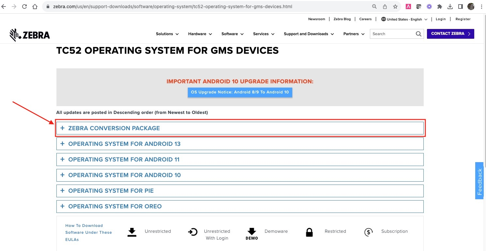 Click image to enlarge; ESC to exit. - From the same page on the Zebra Support Portal, download the Android 13 "Full Update" OS package to the PC.
Zebra recommends renaming the downloaded Android 13 OS image file toFBE_FOTA.zipand storing it in a folder from which adb will be executed. This simplifies subsequent steps that use adb.- Sufficient storage space is required in the data partition of devices to store this image file and successfully perform the migration process.
- Optionally, disable EMM policies that might interfere with or complicate the migration process.
- Organize devices into groups based on usage persona:
- Identify each group of devices that is representative of a typical usage persona. Organize devices into multiple groups if there are different applications installed and/or significant differences in the amount of data stored.
- Choose a device in each group that is representative of the devices in that group. Throughout this document, the chosen device for a group will be referred to as the "Golden Device” for that group and all devices in a group that are not the Golden Device will be referred to as "Target devices" for simplicity.
- If all devices are configured similarly, there is only one usage persona, resulting in a single group and a single Golden Device.
- Execute the Migration Procedure for each group of devices.
- If applicable, perform any final steps required after all groups of devices have completed the upgrade. This might include a reversal or stricter enforcement of certain steps performed during preparation. For example, it might be desirable to re-enable some EMM policies that were disabled as part of preparation.
- Optionally, verification can be performed to ensure that the resulting outcome meets expectations. For example, a report could be generated from an EMM to verify whether all devices that underwent the migration process are correctly reporting Android 13 as their operating system and functioning as expected.
Migration Procedure
Follow this procedure for each group of devices required for the migration. See Process Overview & Preparation to identify individual device groups.
Part 1: Adjust Password Policy
- IF NECESSARY, remove password policies from all devices in the group to ensure that migration operations can be completed.
- The migration process ALWAYS results in the loss of any existing PIN/password that was present on the device prior to the migration process. If a password policy is applied using an EMM, it could result in an EMM-specific interruption in the migration process flow. Removing such a policy could result to a smoother migration process. Such policies should be restored during finalization as needed.
- Devices with Zebra Enterprise Login Screen (ELS) MUST be set to "bypass credentials" to proceed.
- IF DESIRED: Remove PINs/passwords from devices to make the migration process fully unattended.
- If Android Secure Startup is enabled on the devices, the user is REQUIRED to enter a PIN/password after every reboot. Since the migration process includes multiple reboots, leaving Secure Startup enabled prevents the migration process from being fully unattended.
- If Android Secure Startup is disabled on the devices and a PIN/password is set, the user is REQUESTED to enter a PIN/password after each reboot. The migration process is designed to proceed even without such entry and therefore can proceed fully unattended.
Part 2: Create Golden Config
To create a Golden Configuration to apply to Target devices, perform the following steps MANUALLY on the Golden Device (identified from a group of devices for a given usage persona):
IF NECESSARY, relax any restrictions applied to the Golden Device that might prevent the use of adb on the PC to push and pull files to and from the Golden Device. Such restrictions might include one or more of the following:
- MX UsbMgr USB Module Usage set to Disable, thus preventing all use of USB on the Golden Device.
- MX UsbMgr adb Enable/Disable set to Disable, thus preventing use of adb on the Golden Device.
- MX AccessMgr System Settings Access set to anything other than Full, thus preventing the user from launching the Settings UI to enable adb.
- MX UiMgr Gear Icon Show/Hide set to Hide, thus preventing the user from launching the Settings UI from the Gear Icon in the Notification Panel.
- MX UiMgr Notification Pulldown Enable/Disable set to Disable, thus preventing the user from pulling down the Notification Panel and thus preventing the user from launching the Settings UI from the Gear Icon in the Notification Panel.
- If an EMM is preventing the use of adb, enable adb usage on the Golden Device by configuring the EMM settings.
- Using a launcher to lock down the device and prevent the user from launching the Settings UI.
Set up adb on the Golden Device by following these steps:
On the Golden Device:Launch Android Settings panel
Scroll down and select About phone
Scroll down to Build number
Tap on Build number seven times to “become a developer”
Tap BACK to return to Settings main page
Scroll down and select System
Select Advanced
Select Developer options
Scroll down and enable USB debugging
Connect the Golden Device to the PC using the appropriate cable Set up adb for use from the PC by following these steps:
On the PC:Open a command prompt and change to a directory where adb can be executed. How to set up adb.
Connect the PC to the Golden Device via adb using the "devices" command:
adb devices- If USB debugging had not previously been allowed on the Golden Device, adb might display the device ID and the “unauthorized” on the PC and the popup: “Allow USB debugging?" on the Golden Device.
Tap Allow button on the device; ignore the PC message.
- If USB debugging had not previously been allowed on the Golden Device, adb might display the device ID and the “unauthorized” on the PC and the popup: “Allow USB debugging?" on the Golden Device.
If necessary, use the "devices" command again to connect the PC to the Golden Device via adb:
adb devicesNow adb should display the device ID and the word “device," indicating that adb is working properly and USB debugging is allowed.
RECOMMENDED: Determine the type of encryption in use on the Golden Device to determine whether data preservation is required and would therefore need to be applied to Target devices in the same group.
From the PC, use the command:
adb shell getprop ro.crypto.typeIf the value “block” is returned, the device is using Full Disk Encryption and the migration process is required to prevent data loss.
If the value “file” is returned, the device is using File Based Encryption and no data loss will occur as part of the upgrade to Android 13. Skip to the Android 13 Upgrade section of this document.
Push the Android 13 OS image to the Golden Device in the required folder and with the required file name using adb:
adb push FBE_FOTA.zip /data/tmp/public/FBE_FOTA.zip- The adb command above assumes that the Android 13 OS image is downloaded to the PC and placed in the folder from which adb is run with the required name. If that is not the case, modify the first (source file) argument to the adb command must specify the path to where the file is located with the correct file name.
- The second (destination) argument to the adb command must not be changed, since the exact specified folder and file name of the file on the device must be used in order for the migration process to work correctly.
ATTENTION!!
DO NOT proceed with the subsequent steps if the adb command for this step fails, for example due to insufficient available storage space. If this occurs, the Golden Device must be recovered as described in the Failure Recovery section.Confirm that the pushed file is world-readable/writable:
adb shell chmod 666 /data/tmp/public/FBE_FOTA.zipPut the Golden Device in Recovery Mode:
adb reboot recoveryFrom the Recovery Mode UI on Golden Device, select “Apply upgrade from adb” to start listening for ZCP to be sent from PC.
Send ZCP from PC to the Golden Device, where zcp is the path and file name of where ZCP was previously downloaded to the PC:
adb sideload ZCPFrom the Recovery Mode UI on the Golden Device, select “Reboot system now” to boot the device to Android 13.
ZCP presents a screen on the Golden Device from which the File Guardian utility can be launched.
If the icon seen in the image below is visible on the Golden Device, proceed to Step 12. 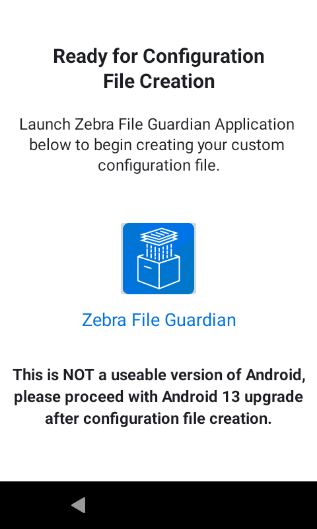 Click image to enlarge; ESC to exit.If the EMM has been enrolled and configured to “disable system apps," the File Guardian utility might be disabled.
If the Golden Device displays a screen like the image below, use the EMM to enable the File Guardian utility (package name:com.zebra.fileutility) on the Golden Device and reboot the Golden Device. The screen shown in Step 10 (allowing the File Guardian utility) should appear on the Golden Device after it reboots. 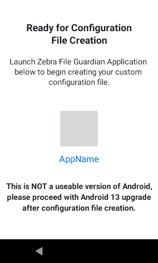 Click image to enlarge; ESC to exit.Tap the icon (as seen in Step 10) to launch Zebra File Guardian.
Select and prioritize the apps, data and settings to be preserved following the steps below. Save backup information as the “Golden Configuration” file for the group of devices represented by the Golden Device.
Tap Get Started to proceed: 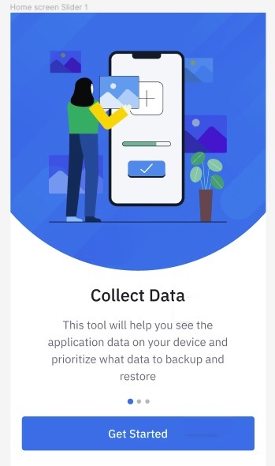 Click image to enlarge; ESC to exit.
After a few moments, the tool presents a list of all apps and data on the device with an interface for making selections: 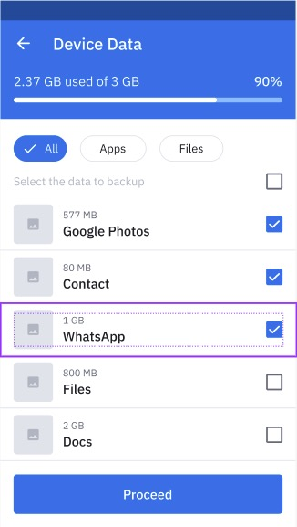 Click image to enlarge; ESC to exit.
Tap to select apps and files to preserve.
If the size limit is reached, it might be necessary to de-select some items or move them lower in the priority (see next step). 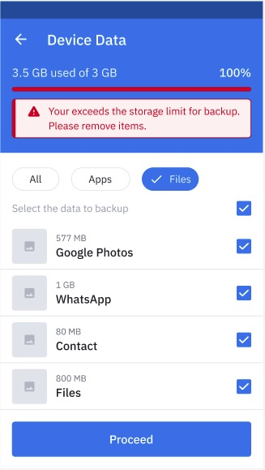 Click image to enlarge; ESC to exit.After selecting files to be preserved, drag the most important files toward the top.
When finished, tap "Proceed" and then "Save XML" to store the Golden Config: 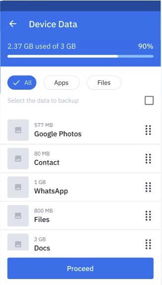 Click image to enlarge; ESC to exit.
THIS STEP IS NOT OPTIONAL
Select YES (to opt for assessment tests later) or NO (to eliminate option ONLY IF YOU'RE SURE devices are identical)
SKIP THIS STEP and tap "Proceed" if creating a Golden Configuration (GC) for the first time. The options on this screen allow for the testing of devices similar to the Golden Device to help determine whether those devices will migrate successfully using the Golden Configuration (GC) being created now. Learn more about these optional assessment tests. 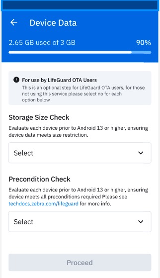 Click image to enlarge; ESC to exit.
When the message below is displayed, it's safe to proceed to the next step.
Take note of the backup file location on the device: 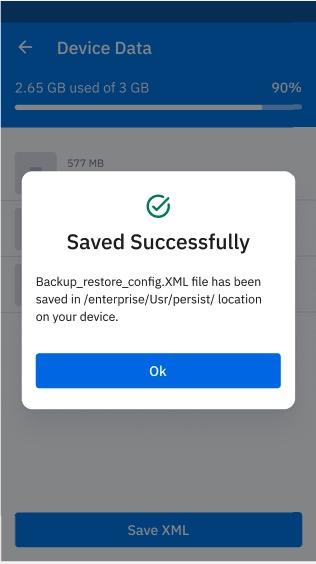 Click image to enlarge; ESC to exit.Tap Ok.
Extract the Golden Configuration file from the Golden Device and onto the PC:
adb pull /enterprise/usr/persist/backup_restore_config.xml backup_restore_config.xml
- The second (destination) argument can be changed to give the file a different name on the PC than is on the Golden Device. This might be desirable if there is a need to keep track of multiple Golden Configuration files for multiple groups.
- When pushing a Golden Configuration file to devices, it must be pushed with the same name it had on the Golden Device, regardless of name used when saving the extracted files on the PC.
22. Tap "Proceed with Device Update" button.
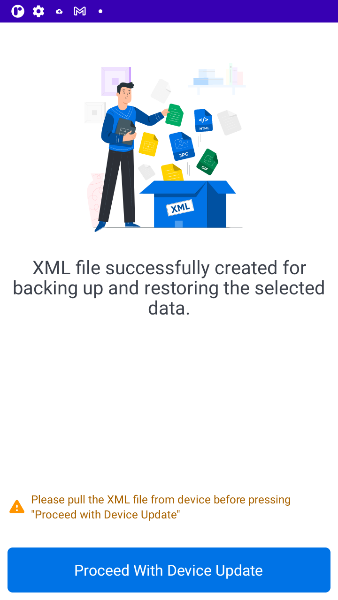
Click image to enlarge; ESC to exit.
23. When the Golden Device boots into Android 13, reapply any restrictions that were relaxed in Step 1 (if applicable) to finalize the state of the Golden Device.
24. Test the Golden Device to ensure that:
* It has been updated properly and is in an acceptable production state
* The preserved apps, data and settings are present and accounted for
* If either of these conditions is not met, it is not advisable to move on to the next part of the migration process. To proceed, make any necessary corrections to the manual process and apply the revised process to a new Golden Device selected from the same group until the Golden Device finishes the process in an acceptable state.
Any migration failure on a Golden Device should be handled as described in the Failure Recovery section of this document.
Part 3: Test Golden Config
To test the Golden Configuration, perform the following steps on a selected subset of Target devices:
- Determine the method to use for automating migration (EMM, StageNow, etc.). Use that method as needed to perform Steps 2–8, below. Be sure to verify that the selected method ensures permissions on pushed files allow global read/write permissions (e.g. 666 or 777). Zebra MX FileMgr (through StageNow or OEMConfig) does this automatically; an EMM might require an extra step.
How to push files using Zebra DNA Cloud:
- Use the selected automation method (from Step 1) to push the Golden Configuration file
backup_restore_config.xml(extracted from the Golden Device for the group) to the file path/enterprise/usr/persist/backup_restore_config.xmlon all Target devices in the chosen subset. - If using LifeGuard OTA via Zebra DNA Cloud (ZDNA) or an integrated EMM system:
- Execute the upgrade from the ZDNA or EMM portal as normal.
- Skip to Step 5.
- If NOT using LifeGuard OTA via Zebra DNA Cloud (ZDNA) or an integrated EMM system:
- Push the Android 13 OS image to the file path
/data/tmp/public/FBE_FOTA.zipon the Target device in the chosen subset using the chosen method. - Perform an OS upgrade to the ZCP on the Target device(s) in the chosen subset using the chosen method.
- Push the Android 13 OS image to the file path
- If the automated process cannot proceed unattended, monitor Target devices and enter the PIN/password (and/or perform other actions as needed) to ensure that all Target devices complete the process.
- Verify the Target devices to ensure that they are properly updated from the automated process and they are all in an acceptable production state (including the expected preservation of required applications and data).
- If not satisfied with the state of any of the any devices in the chosen subset, Zebra recommends making any necessary corrections in the automated process and applying it to a new chosen subset of Target devices selected from the same group until the expected result is achieved on all Target devices in the chosen subset.
- If desired, Steps 1-6 above can be repeated for other device personas (if any).
- Address any failure in the migration process as described in the Failure Recovery section.
The migration process might proceed fully unattended, automatically rebooting multiple times until the device is in the final state on Android 13. Otherwise, depending on the starting state of the device and depending on whether any configurations are changed during preparation, the process might not proceed fully unattended and manual interventions (e.g. enter a PIN/passcode) might be required for a device to reach the final state on Android 13.
Aside from required interventions, users should be instructed not to interfere with devices during the migration process.
Optional Assessment Tests
Optional assessment tests are RECOMMENDED ONLY IF ALL TARGET DEVICES IN THE SELECTED PERSONA ARE NOT IDENTICAL, or if the precondition state or storage capacity of some devices in a given persona are not fully known. Assessment tests allow the Golden Configuration (GC) file created previously to be used to test devices similar to the Golden Device to help determine whether those devices will migrate successfully using that GC, or if further actions would be required for migration.
Test Results
Assessment test results estimate whether remediation of affected devices might increase the chance of successful migration.
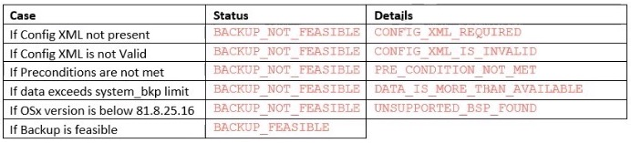
Click image to enlarge; ESC to exit.
To perform an assessment:
- Push the original Golden Configuration (GC) (
backup_restore_config.xml) to the following device location:
/enterprise/usr/persist/
- Download the Zebra File Guardian utility for the target device from the Conversion Package section of its LifeGuard Update page.
- Install File Guardian on the device using the chosen method (EMM, StageNow + AppMgr, etc.).
- Launch File Guardian and use the tool to perform an assessment on the device (as in Step 18, above).
- If using an EMM, the EMM device agent should broadcast the
com.zebra.intent.action.START_COARSE_ESTIMATEintent action.
- If using an EMM, the EMM device agent should broadcast the
- Upon receiving the intent, File Guardian will consume the GC file and perform the assessment in two phases:
- Assessment of backup data size
- Assessment of preconditions required for backup/restore process
- The assessment result is placed in one of the following device folders:
- LifeGuard OTA:
/enterprise/usr/persist/backup_readiness_status.xml - EMM AirWatch/SOTI:
/enterprise/usr/attributes/com.zebra.fileutility.xml
- LifeGuard OTA:
- Parse the assessment status file to help identify the course of action for remediation. The EMM agent must pull the
com.zebra.fileutility.xmlstatus file from the device using MX FileManager.
Some EMMs can be configured through rules to monitor a file on the device and display test results in the EMM console.
Remediate after assessment:
After parsing the test output file, administrators might pursue the following remedial actions:
- DATA IS MORE THAN AVAILABLE:
- Remove apps and/or data from target and re-assess
- Ignore the warning and proceed with migration, allowing file prioritization stored with the GC to control which files are preserved (could result in data loss)
- Make a new GC from device(s) not identical to the first Golden Device and apply to all similar devices
- PRECONDITION NOT MET:
- Analyze and correct condition
- Manually back up data, migrate to Android 13 (which requires wiping device) and manually restore data
Part 4: Mass Deploy
After successfully verifying a small chosen subset of Target devices in a group, the migration process can be applied to ALL remaining Target devices in the group. These remaining devices might be broken down into subsets for logistical reasons. Follow the same steps described in Part 3 for the remainder of the Target devices in the group or subsets of devices until the migration process is complete for the group.
Part 5: Repeat Process
If there are multiple device groups, repeat the Migration Procedure for every group.
Failure Recovery
If the Android Migration process fails to complete on a Golden Device or on a Target device, it could leave the device running the Zebra Conversion Package (ZCP). Since devices running ZCP are NOT suitable for production use, some manual intervention is generally required in this situation. If any of the following symptoms of failure is detected on any device, take the recommended actions to recover that device.
Device runs Android 13 and appears stable
If the device does not crash and all expected apps, data and settings are present and working as expected:
- Re-apply any restrictions that were relaxed on a Golden Device to allow the use of adb.
- Re-enable any policies that were disabled to return the device to production state.
- Test the device to be sure it is ready for production deployment.
Device remains in boot mode or repeatedly boots ZCP
If the device is caught in a boot loop or only runs the Zebra Conversion Package:
Reboot the device into Recovery Mode. Instructions vary by device; refer to the device update guide or product documentation.
Once in Recovery Mode, select “Apply upgrade from adb” to start listening for the Android 13 OS image to be sent from PC.
On the PC, send the Android 13 OS image from PC to the Golden Device, where "a13" is the path and file name of the location where the Android 13 OS image was previously downloaded on the PC:
`adb sideload a13`From the Recovery Mode UI on the Golden Device, select “Reboot system now”.
If the device boots successfully into ZCP, resume the migration process.
Device is stuck in the middle of the upgrade
- Try rebooting the device; ZCP should automatically re-attempt the upgrade again to Android 13.
- If the device keeps getting stuck in the upgrade, return to Step 1 in "Device remains in boot mode" section, above.
Device not running Android 13 or is unstable
If the device crashes or the expected apps, data and settings are not present or not working as expected, contact Zebra Support for assistance.
Android 13 Quick Upgrade
Lifeguard OTA: Zebra-managed Auto Updates to Android 13
Organizations using Zebra Lifeguard Over The Air (OTA) to manage devices can use the "Golden Config" file created using the process above to automatically upgrade to Android 13, potentially without data loss.* The LifeGuard OTA automatically restores the data preserved during the Golden Config process after a few additional steps (below).
- The following manual steps are required:
- Deploy the Golden Config (
backup_restore_config.xml) file to the device using any desired method (EMM, StageNow, etc.). - Download and install the Zebra File Guardian utility for the target device from the Conversion Package section of any supported LifeGuard Update page.
Devices not upgraded in this way receive ONLY Android 11 updates.
- Deploy the Golden Config (
* Many factors can effect successful data restoration, including contents of the backup file, available space on target device(s), and whether optional precondition assessment testing was performed; LifeGuard OTA will not attempt migration on devices with any failed assessment.
CAUTION!!
The processes described below might result in data loss. Follow these procedures ONLY when certain that data loss is NOT a concern. If unsure, read the earlier portions of this document to determine whether using one of these simplified procedures is appropriate for the situation.
Simplified A13 Migration: Possible Data Loss
The methods used to perform upgrades to Android 13 are the same as those for other OSes. The following are common methods for Android upgrades based on the tool used.
- Zebra StageNow:
- Use the My LifeGuard Updates feature of the Zebra StageNow workstation tool to automate the creation of a Staging Profile to perform the upgrade from the current (pre-Android 13) OS to the desired Android 13 OS.
- Use StageNow to manually build a Staging Profile that automates the upgrade from the current (pre-Android 13) OS to the desired Android 13 OS.
- EMM system:
- Use an EMM with integrated support for Zebra Firmware Over The Air (FOTA) to perform the upgrade from the current (pre-Android 13) OS to the desired Android 13 OS.
- Use an EMM that supports Zebra OEMConfig to perform the upgrade from the current (pre-Android 13) OS to the desired Android 13 OS.
- Use an EMM with integrated support for performing OS upgrades of Zebra devices to perform the upgrade from the current (pre-Android 13) OS to the desired Android 13 OS.
- Use an EMM that supports submitting XML to Zebra MX to perform the upgrade from the current (pre-Android 13) OS to the desired Android 13 OS.